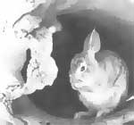
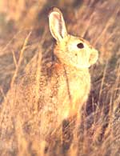
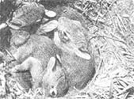

"Here comes Peter Cottontail,
hoppin' down the bunny trail, hippity hoppin',
Easter's on its way."
Here comes Peter Cottontail . . . yes, indeed. You know it's that springtime of year again when you hear children (and children's TV and radio programs) belting out the old familiar ditty.
"Peter Cottontail" was written by Steve Nelson and Jack Rollins back in 1949. In the 38 years since, the loony little tune has become as musically evocative of the nonsectarian aspects of the Easter season as "Here Comes Santa Claus" is of Christmas with the Easter rabbit now almost (but not quite) as prominent as jolly old Saint Nick himself.
Bringin' ev'ry girl and boy, baskets full of Easter joy, things to make your Easter bright and gay.
How in heaven's name-have you ever wondered?-did a concept as preposterous as an egg-laying rabbit (a male rabbit at that) ever manage to become associated with one of the most sacred of all Western religious observances?
Thereupon, as they say, hangs a tale. The story of Peter Cottontail had its beginnings in the old days-the very old days. Back then, centuries before the birth of Christ, the forerunner of the Easter bunny was already a celebrated figure in the springtime fertility rites of the ancient Celts. But this prototypical Easter bunny wasn't a cottontail rabbit at all (they didn't exist in Europe in those days), no sir; he was a European hare. Rabbit, hare-so what's it matter, you ask? After all, they're both furry little critters that hop and chew and wiggle their noses. Granted, it's a hare-splitting distinction, but for those of us interested in the nature of all things natural, it remains a distinction worth clarifying.
Both rabbits and hares belong to the order Lagomorpha (literally, "hare-shaped"), which almost certainly had its origins in Asia (like most everything else mammalian) but can be traced back a good 50 million years right here in North America. Lagomorpha is a smallish order, comprising just two families-Ochotonidae, those vociferous little alpine funny-bunnies known as pikas (sometimes called conies), and Leporidae, the rabbits and hares. All lagomorphs have cleft upper lips (giving rise to the unfortunate expression harelip) and long, rodentlike incisors that grow constantly to compensate for wear. But, contrary to popular (and until 1912, scientific) belief, lagomorphs are not rodents.
Thus, rabbits and hares belong to the same family but are distinct genera. (In descending rank by size, the scientific classification of living things goes like so: order, suborder, family, genus, species, subspecies.) And how can those of us who care to do so tell rabbits from hares? It's not always easy, as evidenced by the frequency with which our language confuses the two: In addition to the original Easter beast having been a European hare rather than an American cottontail rabbit, the domestic bunny commonly known as the Belgian "hare" is actually a rabbit, and the jack "rabbit" is really a hare-just as the snowshoe "rabbit" in fact is a snowshoe (also called "varying") hare.
Be all of that as it may, there are a few recognizable distinctions: Most hares are larger than most rabbits and have bigger ears in proportion to body size, and most hares have black-tipped ears while most rabbits don't.
Additionally, rabbit kittens (yes, odd as it seems, that's what baby bunnies are called) are born blind, naked, and helpless in nursery nests constructed especially for the occasion by the expectant mother-while hare kits are born in the open, wherever Ma happens to be at the time, and enter the world with vision, a cozy coat of fur, and-within a bare few minutes of birth-the ability to scamper out of harm's way.
To bring all of this to bear on our original question, then, Peter Cottontail-technically speaking-should never have been honored in song as the Easter creature because the prototypical Easter rabbit was in fact a hare and a cottontail technically is a rabbit (which is born without hair while hare kits are hairy).
Quite so.
The question properly becomes, then: How in heaven's name did anything as silly as a male, egg-laying hare ever manage to become so closely associated with one of Western religion's most sacred observances?
Thereupon hangs the remainder of the tale already begun.
Just as Easter for Christians honors a resurrection from death and holds a promise of eternal life, to pre-Christian European ancients the egg and the hare were important symbols of the springtime rebirth of nature following the dead zone of winter. The two traditions, sharing the same season as they did, were bound to cross paths. To wit . . .
The egg as a symbol of fertility and birth - what could be more appropriate?-has been traced back to the beginnings of history in a great many cultures. The hare, likewise, was a major symbol of fertility for many ancient peoples. In the religious mythology of the Celts, the prolific little creature was the loyal sidekick of Eostre, the goddess of spring. Around the time of the vernal equinox (March 21) each year, this unlikely couple was honored with various pagan (earth centered) ceremonies-most of which were intended to assure success in the coming season's agricultural and hunting endeavors.
Thus, the Celts' springtime celebration of life's conquest over death-with the hare and egg as symbols of this triumph-significantly predated the arrival of Christianity in Europe. Additionally-according to the English historian The Venerable Bede (672-735), the word Easter derives from the Celtic goddess Eostre, whose name means, literally, "fertile."
Adult cottontails will eat nearly any type of vegetation found in their environment, including your crops.
And so the association of an egg-bearing hare with an important religious holiday comes clear at last (sort of ): The springtime fertility rites of pre-Christian Celts, centering around the hare and his lady friend Eostre, provided these ancient folk with an important sense of long-term security-just as the biblical account of the resurrection decreases angst for Christians today with a promise of eternal life. Difference was, the Celts were petitioning their deities for the renewal of the natural world in the form of children and the replenishment of the crops and creatures critical to the people's sustenance . . . while the Christian celebration offered (and offers) its followers hope, not for the rebirth of nature, but for personal immortality in a world above and beyond the natural.
Across the European centuries, these two ideologically divergent springtime observances came to share the same date and name, and somehow survived in parallel, even though one remained stringently religious while the other gradually entered the realm of children's folklore. When German emigrants came to North America in the 1700s, they brought the tradition of the Easter hare and his eggs along with them. Eventually, through the provincial idiosyncrasies of our language, the hare got transformed into a rabbit, while his eggs were stuffed into a basket for portability.
To summarize the secret life of Peter Cottontail, then, it came to pass that out of the ancient Celtic honoring of Eostre and her pal the hare, hopped our own Easter rabbit with his basketful of eggs. And the Easter rabbit, in turn, provided inspiration for "Peter Cottontail," the giddy little ditty that brings so much joy to the wee folk this time of year.
You'll wake up on Easter morning and you'll know that he was there, when you find those chocolate bunnies that he's hiding ev'rywhere.
Of course, it doesn't take a pagan to see how the bunny came to be regarded as one of the ancients' most potent fertility symbols; everyone knows that lagomorphs breed like . . . well, like rabbits. Consider, as a particularly pregnant example, old Peter's clan, genus Sylvilagus, the cottontails (including swamp rabbits, marsh rabbits, brush rabbits, forest rabbits, pygmy rabbits-plus eastern, western, New England, mountain, and desert cottontails as well as four other species, for a total of 14).
The cottontail is native to, and ubiquitous across, the Americas, ranging from east coast to west, and from southern Canada on the north to as far south as Argentina and Paraguay. Of the 14 species, the eastern cottontail (S. floridanus) is the most plentiful, claims the greatest range (all 48 contiguous states plus), and is the archetypical white bummed bunny that most of us envision when we say "cottontail."
When you consider that virtually all North American predators-from the tiny least weasel to the gargantuan grizzly bear, plus myriad other hunters both winged and human-hold the cottontail to be one of the most delectable items on nature's menu, the continued survival and even prosperity of the genus is downright amazing. Sure, old Peter is adept at both running away (at up to 20 miles per) and hiding from those who would invite him to dinner, but the real secret of the cottontail's success is its prolificacy.
To get the reproductive ball rolling, nature has endowed cottontails with a randiness rivaling even that of humans. Second, cottontails attain sexual maturity with astonishing rapidity (females of one species are capable of breeding within 80 days of birth). Third, the cottontail's short gestation (26 to 30 days) allows for the production of from two to six litters during the annual half-year breeding season (roughly February through August, peaking in May). Fourth, cottontail litter size is large, with three to six kits common and up to eight not unusual.
Thus, a single Madam Cottontail has the potential of producing some 50 young per year.
And, as if all of that wasn't sufficient to guarantee their survival, nature has equipped rabbits with some of the animal kingdom's finest-and least understood-conceptional shortcuts. Witness: Through the phenomenon of induced ovulation, rabbit does release their eggs, not on a fixed timetable, as do most mammals, but only and always in response to the stimulus of copulation. This assures that every time a female cottontail mates, an egg will be in position for fertilization. A second little-known bunny reproductive aid is postpartum estrus, wherein female lagomorphs are capable of conceiving immediately after giving birth, thus achieving continuous pregnancies. (In fact, in a remarkable phenomenon known as superfetation, the females of some species apparently can conceive a second litter before completing delivery of the first, thus achieving overlapping pregnancies.)
In addition to reproducing themselves in wholesale lots, cottontails have an impressive potential longevity for such small mammals, with many species capable of living as long as 10 years under benevolent circumstances. In the wild, of course, this potential is seldom realized; the average life span for adults is just 15 months, with around 90% of each season's crop of kits perishing of natural causes (primarily, disease and inclement weather) or taken by predators. (Human sport-hunting pressure-or the lack thereof -seems to alter the death rate only slightly.)
It's no wonder that mortality is so high among cottontail kits, since they enter life pitifully ill equipped for the many challenges and hardships of the wilds. Newborns weigh only one to two ounces each and are blind, near-naked, and totally helpless. But small mammals mature quickly, and after just a week or so of guzzling their mother's nutritious milk, baby cottontails are furred, have opened their eyes, and are squirming about in the nest. Another week and the kits have tripled their birth weight and are ready to venture out on short treks. Within a month of birth, young cottontails are weaned and entirely on their own.
Each spring and summer, innumerable "abandoned" cottontail kits are discovered by well-meaning folk and taken home to be saved-where they almost always die within a few days. If you should happen upon a seemingly deserted nest of quivering bunny young, be certain-before "rescuing" the little waifs-that they are, in fact, orphaned. Unless you can locate a dead mother rabbit, assume that she's hiding somewhere nearby and will return as soon as you leave-and don't touch the young. If, however, you are absolutely positive that the kits are orphaned, and wish to take them home, you'll have to go out of your way to assure their survival. To begin with, the brood must be provided with a clean, dry nest box housed indoors or at least protected from wind, rain, and deep cold. Nurse cottontail kits on low-fat milk enriched with egg yolks and bunny vitamins (available from feed stores, vets, and mail-order houses).
Adult cottontails can and do eat nearly every type of vegetation their home turf offers-including (depending on season and locale) grasses, forbs, bark, leaves, nuts, berries, seeds, and cultivated crops (even, in rare but documented instances, insects). In a phenomenon known variously as refection and coprophagy (use your dictionary, or ask a rabbit rancher to explain), most everything swallowed by a lagomorph is (to word it as politely as possible) run through the animal's digestive system twice to assure maximal absorption of nutrients. This recycling-for-efciency is especially important in winter, since cottontails neither hibernate nor store food for the hard months, and therefore must make the most of any nourishment that comes their way.
It's no accident of nature, then, that the annual early-summer peak in rabbit population corresponds exactly with the appearance of yummy young green goodies everywhere-including our gardens. Consequently, in rabbit-rich areas, Peter and his extended family can sometimes become first-class pests.
Of course, being Earth's ultimate predators, we human animals have devised a number of ways to combat crop-raiding bunnies, some of which have proven effective, others not. The most certain way to keep hungry rabbits out of small gardens is chicken-wire fencing. If your veggie patch is too spacious to be economically fenced in, you can experiment with various organic defenses-such as bordering your crops with a ring of unappetizing marigolds, spraying sprouting plants with a solution of hot pepper sauce diluted in water (one tablespoon per gallon), dusting both plants and the earth around them with finely ground cayenne pepper, spraying crops with diluted onion juice (liquefy several onions in a juicer, or set them to soak for several days in a bucket of water), or placing old shoes (the funkier the better) near where the bothersome bunnies have been feeding. Some folks even create scent barriers by urinating around the borders of their gardens. (A few years back, one adventuresome entrepreneur marketed lion poop as a mammalian-pest repellent. I hear tell the product proved equally effective at discouraging rabbits, deer, and gardeners.)
More direct (and, thus, more certain) robber-rabbit remedies include fast dogs, large cats, live-trapping, and-in rural areas, at least shotguns and well-aimed .22s.
But this time of year, before you take aim on a bunny in your garden with the intent of transmogrifying diner into dinner, look close to be certain your potential target isn't toting a basketful of odd-colored eggs. Your kids would never forgive you.
Oh! Here comes Peter Cottontail, hoppin' down the bunny trail-hippity hoppity, happy Easter Day!
Tularemia-commonly known as rabbit fever-is an infectious disease caused by a parasitic bacterium with the lilting name Pasteurella tularensis. Primary hosts for these nasty little buggers are rodents and lagomorphs, but rabbit fever can be transmitted to humans through physical contact . . . as in preparing an infected animal for the stewpot. (Thorough cooking kills the bacteria, rendering the meat of infected animals safe to handle and eat.)
In rabbits, the symptoms of tularemia include lethargy and damage to various internal organs; in humans, the primary indications are fever and the swelling of lymph nodes. Although the disease is rare these days and can readily be cured with prompt medical attention, the threat remains: grave illness and the remote possibility of death.
Country wisdom has long held-and correctly so that rabbit fever can be avoided by not harvesting wild bunnies until after autumn's first killing frost; and even then, never handle dead or alive-an animal that behaves unnaturally. Today, that wisdom has been indirectly incorporated into law in most states, since legal rabbit-hunting seasons almost never open before late fall or early winter, and generally close before the arrival of spring.
So, yes, there is such a thing as rabbit fever, even today. But no, it isn't a great threat and shouldn't keep those who wish to do so from hunting and eating wild lagomorphs. Here are the rules for safety:
1. Harvest wild rabbits only during legal hunting seasons.
2. Avoid handling animals that indicate by their actions (or inaction) that they may be ill.
3. If you have cuts or open sores on your hands, wear rubber gloves when preparing wild rabbits for the pot.
4. Cook all wild meat thoroughly.
The meat of cottontail rabbits and snowshoe hares is tender, tasty, and healthful. There's no need to let the remote threat of tularemia keep you from munching bunny. Just be aware.
PETERSON COTTONTAIL" BY STEVE NELSON AND JACK ROLLINS USED BY PERMISSION. COPYRIGHT © 1950 BY HILL AND RANGE SONGS, INC. COPYRIGHT RENEWED AND ASSIGNED TO CHAPPELL AND CO., (INTERSONG MUSIC, PUBLISHER). INTERNATIONAL COPYRIGHT SECURED. ALL RIGHTS RESERVED.
|
The common cottontail rabbit succeds by simply outbreeding its many predators. |
 Rabbits does release their eggs in response to the stimulus of cupolation, and can overlap pregnancies. |
 |
|
 |
|
|